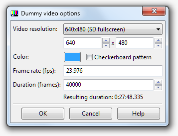

Aegisub不是一个视频（或媒体）播放器，但它依然支持载入多种视频文件。 这一篇就是关于Aegisub是如何载入和处理视频文件的，如果你只是想做一个安静的美男子（萌妹子）， 建议您还是直接参考排版教程 或 可视化排版 .
在 视频_菜单中选择 _打开视频。你所能打开的视频文件类型取决于你的视频提供器。如果你要使用空白视频，则点击 打开空白视频。
Aegisub通常使用FFMS2来打开视频，它基本上支持所有常见的音频和视频格式和许多不常见的格式。如果你要查看完整的支持的编解码器的列表，请参阅FFmpeg 或者Libav的文档。注意：FFMS2当前无法正常处理交错的H.264编码的视频。
在Windows平台，您可以使用Avisynth来取代FFMS2。 当通过 _Avisynth_打开视频时，Aegisub会尝试多个读取源的函数来寻找最佳选择：
Import() : Avisynth的內建函数。仅用于读取AVS脚本。
AviSource() : Avisynth的內建函数。AviSource使用系统的Video for Windows(VfW)解码器来打开视频，这对于一些迷之格式可能是最好的/唯一的选择。如果AviSource无法打开视频，那么Aegisub将会尝试DSS2，最后尝试DirectShowSource。
MPEG2Source() : 仅用于加载 .d2v 文件（DVD2AVI项目文件；从DVD抓取的VOB文件）。Aegisub尝试使用neuron2的DGDecode来打开文件。如果Aegisub无法找到它或者无法载入，将会尝试旧的mpeg2dec3.dll来代替。如果俩都失败了，就会返回一个错误。这是读取DVD文件的最可靠方法。
DirectShowSource() : 使用DirectShowSource()（由Avisynth提供）来尝试载入文件。总体上与DSS2是一样的，但是远不及其可靠，而且不会把VFR文件转换为CFR文件。警告：DSS无法正常进行frame-accurate seeking，请尽量避免使用DSS。 注意，VFR视频不被Avisynth提供器支持，有时，载入外部时间码可能管用，但是实际上它会瞎搞一通。 Aegisub会在?data目录（Windows下通常在aegisub32.exe所在的文件夹）寻找Avisynth插件。你也可以直接把他们放在你的Avisynth插件文件夹来让它们自动载入。
Aegisub也支持提供一个空白视频，来让你不需要任何实际的视频就可以测试字幕的渲染。空白视频生成器对话框如下图所示。

分辨率 : 空白视频的分辨率。该选项的下拉菜单会有一些预设好的选择，你也可以自己指定。注意，由于空白视频是RGB颜色的，所以对于奇数的宽度高度并没有什么特定的限制。
颜色 : 空白视频的颜色。默认是纯色，如果需要点花哨的变化，可以点上“棋盘样式”。
帧率 : 通过指定FPS来设定每帧播放的时间。值得一提的是空白视频也是可以载入VFR时间码的。
长度 : 空白视频的长度（以帧为单位）。下方会有计算好的以时分秒为格式的长度显示。
Aegisub 完全支持视频的播放，但经常有关于是否缺少某些功能的争论。
想清楚。你是否真的想要播放视频？（提示：答案是否定的，你并不想这么做，至少不是在Aegisub里）如果你想要检查字幕是不是匹配画面中的东西，用方向键来逐帧播放不是更好么？如果你在最后检查你的字幕，用实际播放使用的播放器不是更好么？
结论是：在真实的使用情境下，你永远不会需要在Aegisub内播放视频。Aegisub并不是一个视频播放器。尽管如此，Aegisub依然努力支持了可靠的视频播放功能，事实上也工作得不错。
注意，在播放视频时，音频需要特地加载，如果你觉得这很烦，你打开视频的时候会有一个“从视频中打开音频”的选项。
对关键帧的简要的、高度简化的解释是：
现代视频编解码器压缩视频，以用尽可能少的信息来存储视频。它们并不是完整存储视频的每一帧，而是时不时取一个关键帧完整存储。在两个关键帧之间的帧，只会存储画面自上个关键帧以来的变化。 因此，为了定位特定的帧，解码器需要找到它前面的一个关键帧，然后解码这之间的所有帧，这意味着定位关键帧会比定位一般帧更快。Keyframes are interesting mostly for scene timing reasons,因为关键帧通常在场景切换的时候出现。每个场景的第一帧通常的安定的关键帧，但是，这并不意味着每一个关键帧都代表场景的切换。大多数编码器都会至少每250~300帧插入一个关键帧，即使并没有场景转换。
Aegisub在程序的多处使用了关键帧数据。关键帧将会被绘制在视频进度条上方（黑条），也会在音频的波形/频谱图中显示。
当使用FFMS2打开视频时，Aegisub支持从大多数格式的文件中读取关键帧数据。然而使用Avisynth提供器时只支持从AVI文件中读取关键帧数据。如果你正在使用一种无法读取关键帧数据的视频格式，你仍然可以另外载入关键帧数据。Aegisub当前支持从几种文件中读取关键帧数据：Aegisub关键帧文件（见下方的格式说明）、XviD first-pass文件、DivX first-pass文件和x264 first-pass文件。
即使可以从视频文件中读取到关键帧数据，有时候另外载入外部关键帧数据也是十分有用的。为音频计时而使用XviD first-pass的.stat文件是非常常见的，因为XviD的关键帧的关键帧选择往往在场景切换时更准确。
Aegisub也可以把当前载入的关键帧数据写入一个关键帧数据文件夹，这可能在避免传递视频文件时十分有用（比如仅传递音频打轴）。
关键帧文件时ASCII编码的纯文本，\n和\r\n都被解析为换行。语法例子： # keyframe format v1 fps 0 0 30 70 82 130 131
A keyframes file is a plain ASCII-encoded text file; both \n and \r\n is understood to mean a linebreak. Syntax example:
# keyframe format v1
fps 0
0
30
70
82
130
131
第一行是格式规范：字符串# keyframe format v1。 第二行包含了用于生成关键帧数据的视频的FPS。
这实际上并没有什么用，因为没有程序支持这个玩意，所以就写0吧。在FPS行之后是一行一个的整数，代表了关键帧的位置。0代表第一帧。
Aegisub支持载入VFR视频。VFR的原理和应用远超出本手册的范围（参见 the VFR thread on AnimeSuki 或 Avisynth manual page 来获取VFR的更多信息）。但是我们会让你知道Aegisub是如何处理VFR视频的。
Aegisub支持载入Matroska时间码文件（v1和v2），如果你有一个VFRaC视频文件，而且想制作与其同步的字幕，这会很有用。如果你载入一个VFR视频，Aegisub将从视频文件中直接自动读取时间码。
As long as you're not encoding with GDSMux, the encoding environment your subtitling filter is working in (i.e. Avisynth, VirtualDub or mencoder) will assume that the world is CFR, and hence the input file is VFRaC. This is obviously a problem since it messes up subtitle synchronization. Aegisub provides a way around this through the Framerate Transformation export filter, which takes the framerate of the VFRaC input file and the timecodes, and then changes every time code and override tag in the script so it can be hardsubbed on the VFRaC video and still sync up perfectly after timecodes are applied. To prepare a script for hardsubbing, make sure you have the timecodes loaded, then go to the File menu and press Export. Untick everything except the Transform Framerate filter. Choose the Variable output mode. It needs to know the FPS of the video you're going to hardsub the subtitles on; if you have video loaded Aegisub will assume that's it and insert it in the box for you.
注意： if you have a Matroska or other VFR file loaded, remember that the FPS value Aegisub reports might not be the same as the one of the video you are going to hardsub the subtitles on.
OR: How to get your subtitles to not look stretched
The following paragraphs assumes that you have a working knowledge of what anamorphic video is and how aspect ratios work. If you feel unsure, you may want to consult a gentle but fairly complete introduction.
An anamorphic image needs to be stretched to the proper aspect ratio before it is presented to the viewer. On a computer, this is usually done by the video renderer, and thereby lies a problem. Most subtitle renderers (including VSFilter, the current "standard" renderer) do the subtitle drawing on the image before it is stretched, and since the renderer is not aware of any aspect ratio issues, the subtitles will be stretched along with the image when the video is displayed to the viewer, and therefore they will look stretched. Aegisub does its subtitle rendering this way as well (since that way it will be WYSIWYG with most players); you can test how it looks by using the "Override aspect ratio" in the video menu.
Fortunately it's easy to compensate for the stretching, since you know by how much the image will be stretched (since you know its original dimensions and the display aspect ratio). You just calculate how many percent the image will be stretched in either the X or the Y direction, and then set the ScaleX or ScaleY parameter in the style (or use the \fscx or \fscy overrides) to the same amount but in the other direction.
Example: we have a 704x480 image that we know will be displayed as 16:9 (or 1.7777…:1). If we assume that the player will stretch the width but leave the height untouched, this means that the new width will be:
(16 / 9) * 480 = 853.333...
which in percent is:
853.333... / 704 = 1.212121...
i.e. 121%. Hence, to compensate for this horizontal (X-direction) stretch we set ScaleY in all our styles to 121% to stretch the subtitles by the same amount, and after rendering they now no longer look stretched.
OR we can do the stretching in the other direction, assuming that the player changes the height of the image instead. Assuming the same image: 704 / (16 / 9) = 396 which corresponds to: 396 / 480 = 0.825 or 82.5%, which means we can compensate for the vertical (Y) compression by setting ScaleX to 82.5%.
Both of the above methods give the subtitles the proper aspect ratio, but depending on how the player does the stretching, you may get subtle variations in subtitle size. Aegisub (and indeed most video players and renderers) always changes the image width and never the height, except if you pick the "custom" aspect ratio and specify a resolution. Note that if you use the Matroska container, you may specify the display resolution directly, but player support of this varies.
Note that some odd subtitle renderers (most notably Media Player Classic's builtin renderer) are actually a part of the video renderer and will do the subtitle rendering after anamorphic stretching, resulting in stretched subtitles and much annoyance. With MPlayer's libass renderer, you can actually specify whether subtitles should be drawn before or after stretching by using the -vf parameter to move the subtitle renderer in the filter chain.
For more information about anamorphic video and aspect ratios in general (a deeply obfuscated topic that appears simple at a glance) the following links may be of interest:
以下设置在视频菜单中可用。
显示视频属性 : 显示一些当前打开的视频的信息，包括：文件名、FPS（VFR视频显示平均FPS）、分辨率和比例、长度以及解码器。Decoder being what filter/method Aegisub used to open the file.
关闭时间码文件 : 卸载当前载入的时间码文件。
Draws a blue "mask" over the image, indicating the edges of the action safe (dark blue) and title safe (light blue) areas. Useful if you plan on showing your subtitles on a TV without adjustable overscan correction. For more information, see the Wikipedia pages on overscan, safe areas and overscan amounts. Aegisub follows the BBC guidelines on how big the safe areas should be.